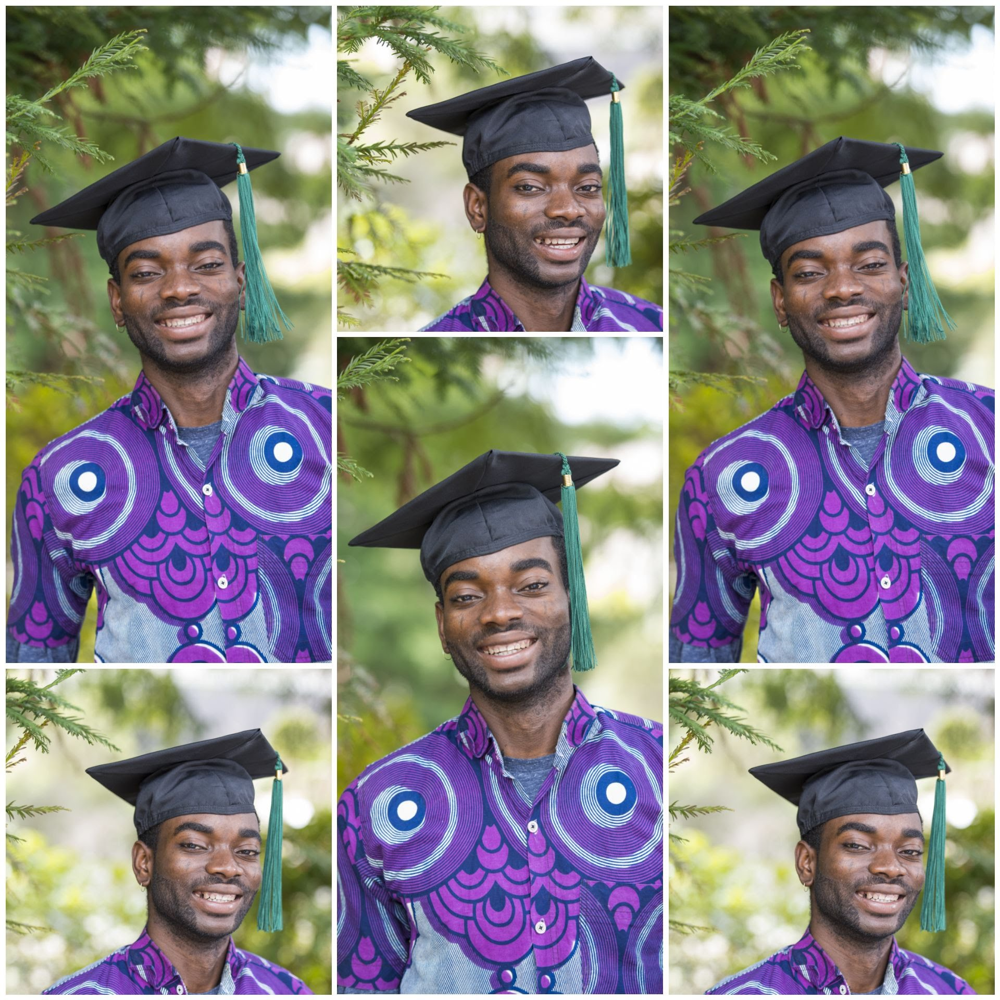

<!DOCTYPE html>
<html>

<head>
	<meta charset="utf-8">
	<meta name="viewport" content="width=device-width">
	<title>Lebari Sunday | Software Developer | Portfolio</title>
	<link href="https://cdnjs.cloudflare.com/ajax/libs/normalize/8.0.1/normalize.min.css" rel="stylesheet" type="text/css" />
	<link href="<html>
  <head>
    <link rel="stylesheet" href=<"https://fonts.googleapis.com/css2?family=Crimson+Pro&family=Literata">
    <style>
      body {
        font-size: 20px;
      }
      div:nth-child(1) {
        font-family: 'Crimson Pro', serif;
      }
      div:nth-child(2) {
        font-family: 'Literata’, serif;
      }
    </style>
  </head>
  <body>
    
</html>
	<link rel="stylesheet" type="text/css" href="style.css">
</head>

<body>

	<header>
		<div class="logo">Lebari Sunday</div>
		<h2>Software Developer</h2>
	</header>

	<main>

		<!-- Introduction -->
		<section>

			
      <h1>Hello! I'm Lebari Sunday</h1>
      <hr>
      <p>I am on the verge of learning coding.</p> I am trying to become a software developer. I am looking forward to learning a lot. I am currently living in Reno, Nevada.</p>
        <p>I graduated from Humboldt State Unviersity in 2018 and got my B.A in Sociology. I am currently trying to attend a coding bootcamp for software developement. I am interested in sports and many other hobbies. I love fishing.</p>
        <ul>
          <li>Trying to become  software developer.</li>
          <li>Challenging myself to the fullest extent.</li>
          <li>Team player and always willing to learn something new.</li>
          <li>I hope to make many developers friends that would help me succeed in this field.</li>
        </ul>

        <p>Please take a look at my website and feel free to <a href="#contact">Contact Me!</a></p>
    </section>

    <!-- About Me -->
    <section>
      <h2 class="border-top">About Lebari</h2>
        <p>After graduating college, I worked for the county of Humboldt. I worked specifically for DHHS in the Public Guardian division. I worked as a vocational assistant. My goal at the time was to try and become a social worker. With the pandemic hitting and source of income diminishing. Me and my wife decided to move to Reno, NV in search of better opportunities.</p>

        <p>I've always been into computer developement and gaming. I can fix gaming console and many other devices. I finally built a huge interest in the IT industry seeing how I already have the talent. I am with Thinkful to help build my skills and succeed in this field as a student. I've begun my journey to becoming a software developer and couldn't be happier!</a>

        <p>I am in the market as a new developer and aslo if you're looking for a somone to work with please reach out! I am very happy and can't wait to work with other developers. We are going to build awesome software.</p>
      </section>

      <!-- Contact -->
      <section id="contact">
        <h2 class="border-top">Contact Lebari</h2>
        <p>I'd love to hear from you! Please feel free to contact me@:</p>
        <ol>
          <li>
            <a href="https://www.linkedin.com/feed/?trk=nav_logo">LinkedIn</a>
          </li>
          <li>
             <a href="https://github.com/lebarisunday">GitHub</a>
          </li>
        </ol>
        <iframe src="https://www.google.com/maps/embed?pb=!1m18!1m12!1m3!1d196964.56806903754!2d-119.81626793051196!3d39.524162617990356!2m3!1f0!2f0!3f0!3m2!1i1024!2i768!4f13.1!3m3!1m2!1s0x809940ae9292a09d%3A0x40c5c5ce7438f787!2sReno%2C%20NV!5e0!3m2!1sen!2sus!4v1633426554597!5m2!1sen!2sus" width="600" height="450" style="border:0;" allowfullscreen="" loading="lazy"></iframe>
        </section>
    </main>

    <footer>
      <p>&copy; Lebari Sunday</p>
    </footer>
    
    <script src="script.js"></script>
</body>

</html>
